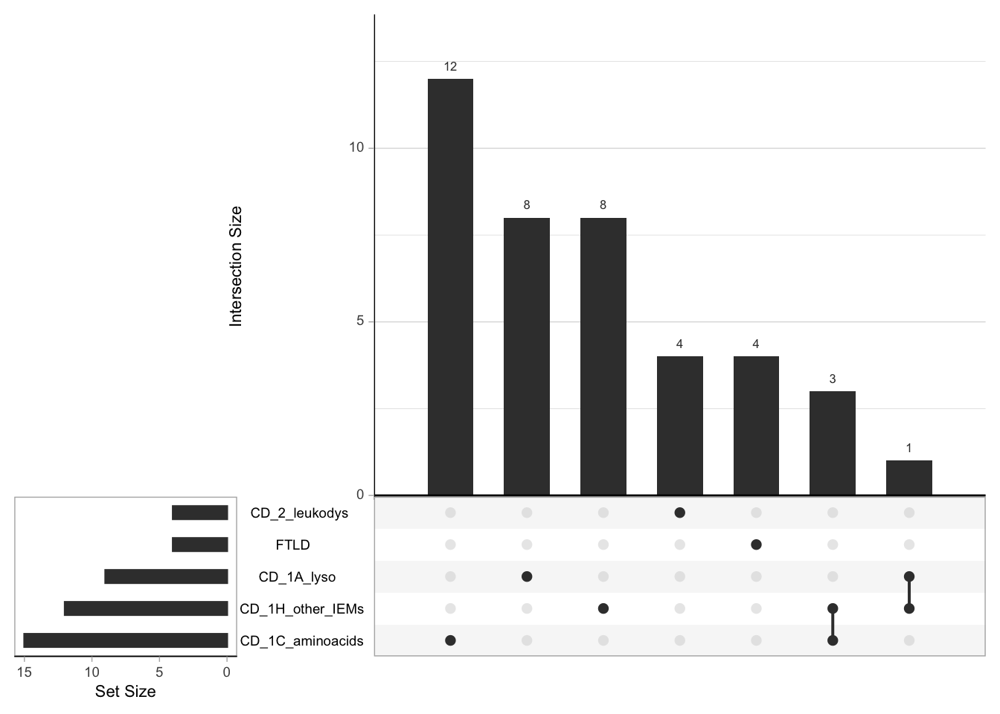
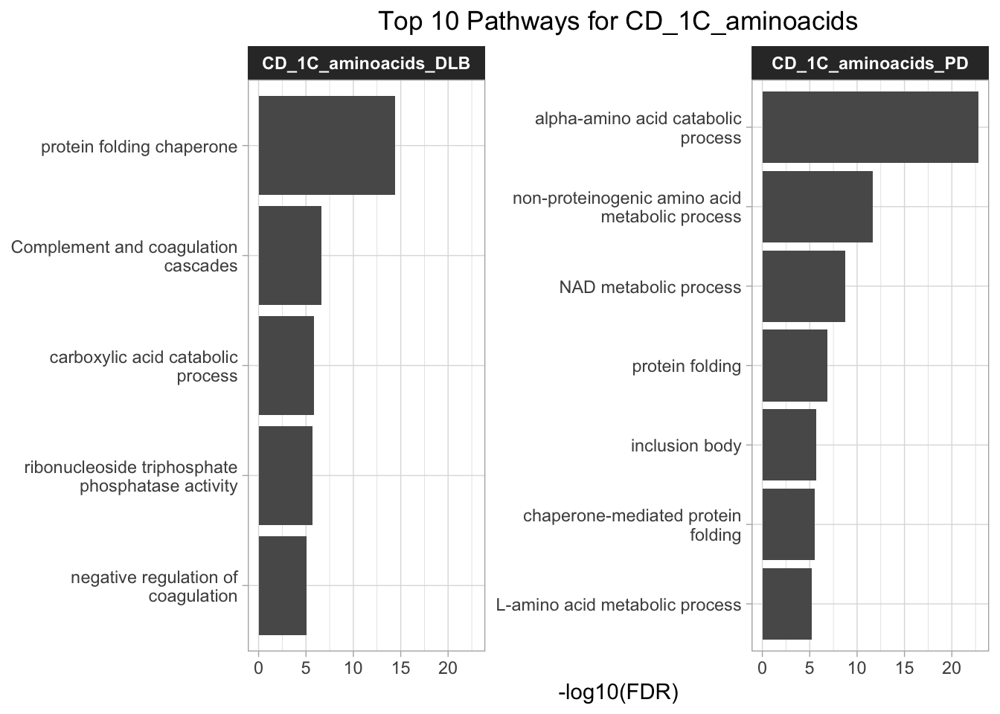
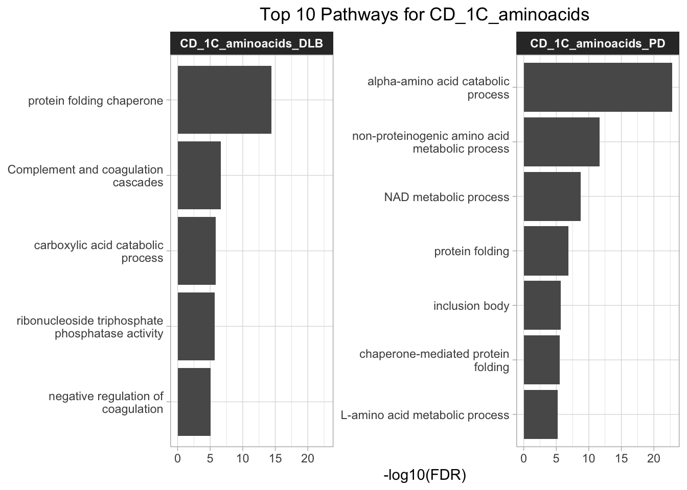

CDsubtypes
Karissa Barthelson
2025-05-15
Last updated: 2025-05-16
Checks: 6 1
Knit directory:
2025_adultchilddementiagenetics/
This reproducible R Markdown analysis was created with workflowr (version 1.7.1). The Checks tab describes the reproducibility checks that were applied when the results were created. The Past versions tab lists the development history.
The R Markdown is untracked by Git. To know which version of the R
Markdown file created these results, you’ll want to first commit it to
the Git repo. If you’re still working on the analysis, you can ignore
this warning. When you’re finished, you can run
wflow_publish to commit the R Markdown file and build the
HTML.
Great job! The global environment was empty. Objects defined in the global environment can affect the analysis in your R Markdown file in unknown ways. For reproduciblity it’s best to always run the code in an empty environment.
The command set.seed(20250515) was run prior to running
the code in the R Markdown file. Setting a seed ensures that any results
that rely on randomness, e.g. subsampling or permutations, are
reproducible.
Great job! Recording the operating system, R version, and package versions is critical for reproducibility.
Nice! There were no cached chunks for this analysis, so you can be confident that you successfully produced the results during this run.
Great job! Using relative paths to the files within your workflowr project makes it easier to run your code on other machines.
Great! You are using Git for version control. Tracking code development and connecting the code version to the results is critical for reproducibility.
The results in this page were generated with repository version 4d75fce. See the Past versions tab to see a history of the changes made to the R Markdown and HTML files.
Note that you need to be careful to ensure that all relevant files for
the analysis have been committed to Git prior to generating the results
(you can use wflow_publish or
wflow_git_commit). workflowr only checks the R Markdown
file, but you know if there are other scripts or data files that it
depends on. Below is the status of the Git repository when the results
were generated:
Ignored files:
Ignored: .Rproj.user/
Ignored: analysis/.DS_Store
Ignored: analysis/figure/
Ignored: data/.DS_Store
Untracked files:
Untracked: VennDiagram.2025-05-15_11-46-54.361617.log
Untracked: VennDiagram.2025-05-15_11-47-06.913106.log
Untracked: VennDiagram.2025-05-15_11-47-13.625688.log
Untracked: VennDiagram.2025-05-15_11-47-26.446071.log
Untracked: analysis/CDsubtypes.rmd
Untracked: analysis/adultvCD.rmd
Untracked: data/R_objects/
Untracked: data/genesets/
Untracked: data/gtex/
Untracked: data/omicsynth/
Untracked: data/results/
Unstaged changes:
Modified: analysis/_site.yml
Deleted: analysis/about.Rmd
Modified: analysis/index.Rmd
Deleted: analysis/license.Rmd
Note that any generated files, e.g. HTML, png, CSS, etc., are not included in this status report because it is ok for generated content to have uncommitted changes.
There are no past versions. Publish this analysis with
wflow_publish() to start tracking its development.
Introduction
knitr::opts_chunk$set(
message = F, echo = T, warning = F
)library(tidyverse)
library(magrittr)
library(readxl)
# vis
library(ComplexUpset)
library(UpSetR)
library(pander)
library(ggeasy)
library(ggpubr)
library(ggrepel)
library(plotly)
library(tidyHeatmap)
library(grid)
library(gridExtra)
library(gridGraphics)
library(viridis)
library(tidytext)
# annotations
library(org.Hs.eg.db)
library(ndexr)
# enrichemnt
library(clusterProfiler)
library(ReactomePA)
theme_set(theme_light() +
theme(plot.title = element_text(hjust = 0.5),
strip.text = element_text(face = "bold"),
strip.background = element_rect(fill = "grey20")
)
)
knitr::opts_chunk$set(
message = F, echo = F, warning = F
)import gene sets
tony curated these genesets from clingen. here is the number of genes per gene set.
overlap of genes across gene sets
There is minimal overlap of genes across the adult and childhod dementia gene sets. Just 1 or 2 in each comparison
the 10 gene overlap is between ALS and FTLD
over-representation analysis of gene sets
Here I will perform pathway/enrichment analysis on these gene sets to see what pathways are enriched, and how much overlap there is.
the background gene set will be all genes found in the PCNet, as these are the ones I am analysing. The node info was obtained from NDex.
GO terms
Here, i performed over-represetation analysis (hypergeometric test) of GO terms (all ontologies) of each gene set using clusterprofiler
KEGG pathways

reactome pathways
Is there significant colocalisation?
Netcoloc was performed and below shows the expected vs observed ratio of the genes identified by dual network propogation.
plot observed v expected per comparison
plot observed v expected ratio
Are the subnetworks biologically meaningful?
Here, I will only consider the subnetworks which are significant
check the genes in the subnetwork are enriched with mouse brain phenotypes
I tested the enrichment of genes associated with mouse brain/neural phenotypes in the NetColoc subnetwork as a whole. I also included here a negative control phenotype - abnormal digit morphology. This is not expected to be associated with the subnetworks.
[[1]][[1]][[1]][[1]][[1]][[1]][[1]][[1]]are the genes in the subnetwork human brain expressed?
I next want to see whether the genes in the subnetwork are expressed in the brain. To do this, I will assess it in the GTEx dataset. I will use the GTEx v10 data, which is the most recent version.
obtain GTEx expression data
This file was downloaded from here : https://www.gtexportal.org/home/downloads/adult-gtex/bulk_tissue_expression
The file contains the median gene-level TPM by tissue.
what pathways are in the subnetwork
I will here show the top pathways identified in the clusters within the subnetworks.
 

what genes are in the subnetworks which are drug targetable?
Here, i obtained the drug targets data from omicsynth to see what genes in the subnetwork have a known drug target.
The plots below show the network proximity score (higher means more proximal to network) vs the evidence of drug interaction (higher interaction = higher score)
R version 4.4.2 (2024-10-31)
Platform: aarch64-apple-darwin20
Running under: macOS Sequoia 15.4.1
Matrix products: default
BLAS: /Library/Frameworks/R.framework/Versions/4.4-arm64/Resources/lib/libRblas.0.dylib
LAPACK: /Library/Frameworks/R.framework/Versions/4.4-arm64/Resources/lib/libRlapack.dylib; LAPACK version 3.12.0
locale:
[1] en_US.UTF-8/en_US.UTF-8/en_US.UTF-8/C/en_US.UTF-8/en_US.UTF-8
time zone: Australia/Adelaide
tzcode source: internal
attached base packages:
[1] stats4 grid stats graphics grDevices utils datasets
[8] methods base
other attached packages:
[1] ReactomePA_1.50.0 clusterProfiler_4.14.6 ndexr_1.28.0
[4] RCX_1.10.0 org.Hs.eg.db_3.20.0 AnnotationDbi_1.68.0
[7] IRanges_2.40.1 S4Vectors_0.44.0 Biobase_2.66.0
[10] BiocGenerics_0.52.0 tidytext_0.4.2 viridis_0.6.5
[13] viridisLite_0.4.2 gridGraphics_0.5-1 gridExtra_2.3
[16] tidyHeatmap_1.11.6 plotly_4.10.4 ggrepel_0.9.6
[19] ggpubr_0.6.0 ggeasy_0.1.5 pander_0.6.6
[22] UpSetR_1.4.0 ComplexUpset_1.3.3 readxl_1.4.5
[25] magrittr_2.0.3 lubridate_1.9.4 forcats_1.0.0
[28] stringr_1.5.1 dplyr_1.1.4 purrr_1.0.4
[31] readr_2.1.5 tidyr_1.3.1 tibble_3.2.1
[34] ggplot2_3.5.1 tidyverse_2.0.0
loaded via a namespace (and not attached):
[1] splines_4.4.2 later_1.4.1 ggplotify_0.1.2
[4] R.oo_1.27.0 cellranger_1.1.0 polyclip_1.10-7
[7] graph_1.84.1 lifecycle_1.0.4 rstatix_0.7.2
[10] doParallel_1.0.17 rprojroot_2.0.4 vroom_1.6.5
[13] lattice_0.22-6 MASS_7.3-65 dendextend_1.19.0
[16] backports_1.5.0 SnowballC_0.7.1 sass_0.4.9
[19] rmarkdown_2.29 jquerylib_0.1.4 yaml_2.3.10
[22] httpuv_1.6.15 ggtangle_0.0.6 cowplot_1.1.3
[25] DBI_1.2.3 RColorBrewer_1.1-3 abind_1.4-8
[28] zlibbioc_1.52.0 R.utils_2.13.0 ggraph_2.2.1
[31] yulab.utils_0.2.0 rappdirs_0.3.3 tweenr_2.0.3
[34] git2r_0.36.2 circlize_0.4.16 GenomeInfoDbData_1.2.13
[37] enrichplot_1.26.6 tokenizers_0.3.0 tidytree_0.4.6
[40] reactome.db_1.89.0 codetools_0.2-20 ggforce_0.4.2
[43] DOSE_4.0.0 tidyselect_1.2.1 shape_1.4.6.1
[46] aplot_0.2.5 UCSC.utils_1.2.0 farver_2.1.2
[49] matrixStats_1.5.0 jsonlite_2.0.0 GetoptLong_1.0.5
[52] tidygraph_1.3.1 Formula_1.2-5 iterators_1.0.14
[55] foreach_1.5.2 tools_4.4.2 treeio_1.30.0
[58] Rcpp_1.0.14 glue_1.8.0 xfun_0.51
[61] qvalue_2.38.0 GenomeInfoDb_1.42.3 withr_3.0.2
[64] fastmap_1.2.0 digest_0.6.37 timechange_0.3.0
[67] R6_2.6.1 colorspace_2.1-1 Cairo_1.6-2
[70] GO.db_3.20.0 RSQLite_2.3.9 R.methodsS3_1.8.2
[73] generics_0.1.3 data.table_1.17.0 graphlayouts_1.2.2
[76] httr_1.4.7 htmlwidgets_1.6.4 graphite_1.52.0
[79] pkgconfig_2.0.3 gtable_0.3.6 blob_1.2.4
[82] workflowr_1.7.1 ComplexHeatmap_2.22.0 XVector_0.46.0
[85] janeaustenr_1.0.0 htmltools_0.5.8.1 carData_3.0-5
[88] fgsea_1.32.4 clue_0.3-66 scales_1.3.0
[91] png_0.1-8 ggfun_0.1.8 knitr_1.50
[94] rstudioapi_0.17.1 tzdb_0.5.0 reshape2_1.4.4
[97] rjson_0.2.23 nlme_3.1-167 cachem_1.1.0
[100] GlobalOptions_0.1.2 parallel_4.4.2 pillar_1.10.1
[103] vctrs_0.6.5 promises_1.3.2 car_3.1-3
[106] cluster_2.1.8.1 evaluate_1.0.3 cli_3.6.4
[109] compiler_4.4.2 rlang_1.1.5 crayon_1.5.3
[112] ggsignif_0.6.4 labeling_0.4.3 plyr_1.8.9
[115] fs_1.6.5 stringi_1.8.7 BiocParallel_1.40.0
[118] munsell_0.5.1 Biostrings_2.74.1 lazyeval_0.2.2
[121] GOSemSim_2.32.0 Matrix_1.7-3 hms_1.1.3
[124] patchwork_1.3.0 bit64_4.6.0-1 KEGGREST_1.46.0
[127] igraph_2.1.4 broom_1.0.8 memoise_2.0.1
[130] bslib_0.9.0 ggtree_3.14.0 fastmatch_1.1-6
[133] bit_4.6.0 ape_5.8-1 gson_0.1.0